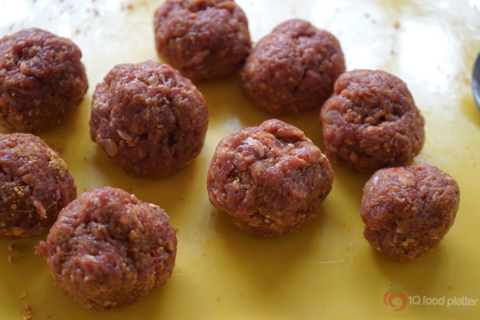
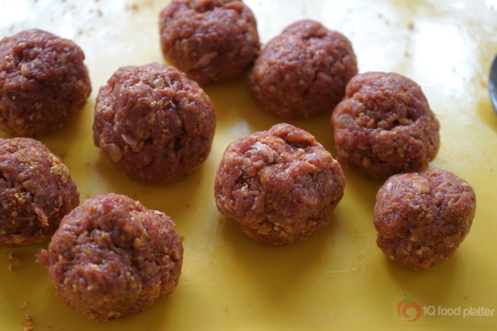
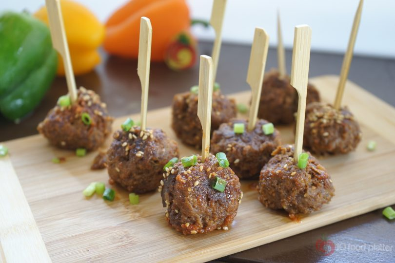

A) SUYA MEAT BALLS
 

How to make Suya Meat Balls My idea of a relaxing weekend is to have well made Suya Meat Balls in a bowl with some tomatoes and raw onion slices . Pairing this with a nice glass of wine and wearing a silk boubou just completes the mood. When you live in Lagos you really understand what it means when someone wishes you a nice weekend. The body just like any engine has to be rested or else you burn out. Talking of rest, I think I want to go back on holiday. I am missing my morning long walks on the street of a suburb in Toronto. I enjoyed the cold morning breeze, the flowers, the bees flying pass,watching people taking out their dogs for a walk, and so many interesting sights.
Now that I am home I simply make do with the gym close by the house to help me stay healthy. There are really not many opportunities to help one increase mobility unless you hit the gym. Anyway for now I will focus on having a nice relaxing weekend .Why not think of something creative to do on your weekend? So let’s go back to my Suya Meat Balls and show you how to make them.
Recipe for Suya Meat Balls
2-3 cups minced Beef, 1/2 teaspoon Suya Pepper, Pinch Ginger powder, 1 table spoon Ground nut or powdered Kulukuli, Beef seasoning cube to taste, 1 clove Garlic, Dry Pepper to taste, Little oil for browning meat.
Method for making Suya Meat Balls
1. Season the meat with seasoning, ginger suya pepper, groundnut powder, garlic
2. Need ingredients well into meat , roll into balls and set aside for about 30 minutes
3. Heat up frying pan till hot and add very little oil to oil base of pan
4. Place the meat balls in the pan and fry till brown on all sides
5. Reduce the heat add about 2 table spoons water cover the pan and allow meat cook for about 5 minutes till water dries up.
6. Serve meat balls with some vegetables or potato wedges or dodo
B) NIGERIAN PUFF PUFF
Recipe for Puff Puff
2 cups flour pepper to taste, 1¼ cups water, 2 tsps yeast, 1 tsp ground nutmeg, ½ tsp salt, ¼ cup sugar + 1 tsp for proofing the yeast, ¼ cup vegetable oil for deep frying.
Method for making Puff Puff
Mix half of a cup of warm water, 1 teaspoon of sugar, and the yeast in a cup. Cover and set aside for 30 minutes to proof.
In another bowl, mix the dry ingredients: the flour, sugar, salt, and nutmeg. Pour the proofed yeast and the remaining one cup of water into the dry ingredients and mix until the batter is lump-free. Add pepper and mix thoroughly.
Cover the batter and allow it to rise for 1 hour. When ready for frying, the batter will give off a distinct sweet smell.
Preheat the oil in a suitably sized pan. Scoop up a little batter with a spoon and drop into the oil.
Fry all over until golden brown. If you are finding it hard to turn the puff puff while frying, just press the balls down a little bit with your spoon and then turn them.
Remove from the heat. Drain on paper towel and enjoy while still hot or warm
C) NIGERIAN CHIN CHIN

Recipe for Chin Chin
280g (1 ¾ cup + 2 Tbsp) all purpose flour 82g (⅓ cup) granulated sugar 57g (4 Tbsp) salted butter ½ teaspoon baking powder ½ teaspoon ground nutmeg 1 large egg ¼ cup evaporated milk Oil for deep frying.
Method for making Chin Chin
Measure and Mix dry ingredients in a bowl and set aside.
Measure and mix wet ingredients together except butter.
Add butter to the dry ingredients and mix with your fingers until just combined.
Pour in the other wet ingredients and mix together until dough forms. it should form a perfect dough but if its feels a bit stiff, add a tablespoon of water or milk. if it feels too tacky, add a tablespoon or 2 of flour no more. DO NOT over work the dough.
Wrap in a saran wrap and allow to rest on the counter for about 5 mins. this allows flavors blend in and develops the gluten which makes it easier during the cutting process
Unwrap rested dough, you can roll out all the dough at once since dough is small or you can divide into 2 portions and roll individually. Roll out dough to about a quarter of an inch thick because dough will rise when you fry them.
With a knife or pizza cutter or even a dough divider cut dough across vertically and horizontally forming little squares.
Put little squares in a bowl and sprinkle a little flour on them and shake to prevent sticking. Heat up oil. Fry till light golden. Remove with a slotted spoon and spread on a paper towel lined tray to cool. Chin chin will be soft when hot but hardens as it cools.